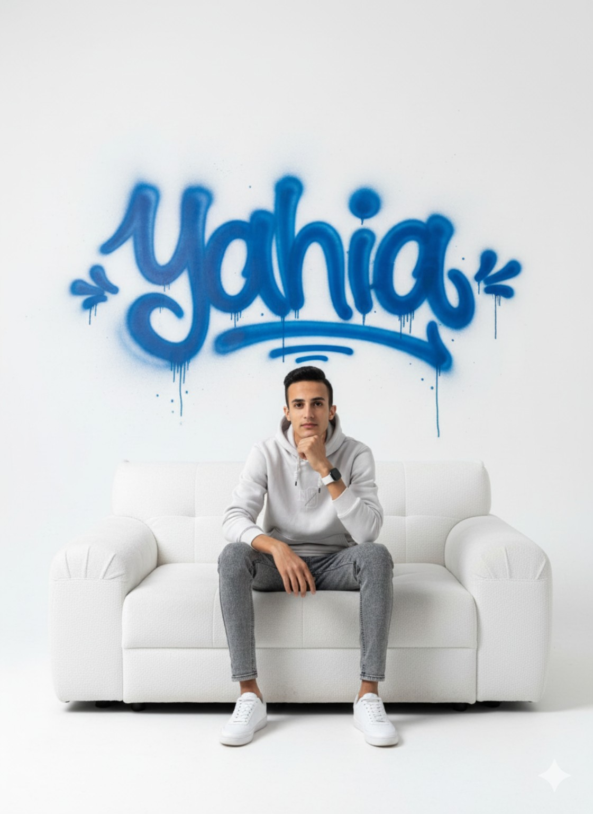

⌘
Front-End
Responsive interfaces with semantic HTML, modern CSS and JavaScript, focused on clarity, motion and usability.
INITIALIZING PORTFOLIO 2026
I'm ENG YAHYA KHALIL, a Front-End Developer building clean, responsive and purposeful digital experiences.

01 — PROFILE
I combine front-end development, data thinking, visual design and real-world quality experience to create work that is useful—not just beautiful.
I'm currently a 4th-year Information Systems student at Computers & Information, while building projects that connect technology with everyday problems.
02 — EXPERTISE
A versatile toolkit shaped by software, data, design and industrial experience.
Responsive interfaces with semantic HTML, modern CSS and JavaScript, focused on clarity, motion and usability.
Practical development across Java, C++, Python and Flutter, with a focus on building functional products.
Turning raw information into dashboards, structured reports and useful business insights.
Visual communication and quality-control experience that bring precision and consistency to digital work.
03 — SELECTED WORK
A selection of digital and analytical work developed around practical needs.
A messaging-app concept inspired by familiar social experiences, designed around usernames instead of phone numbers.
Cleaned, transformed, and checked out student performance data using Python, SQL, and Excel. Did some (EDA) to spot trends, patterns, and key performance stuff. Built cool Power BI dashboards and visuals to share insights. Used Pandas, NumPy, Matplotlib, Seaborn, and SQL to handle, analyze, and report the data.
Modern responsive interfaces with strong visual hierarchy, mobile-first layouts, interaction and polished presentation.
Visual social content created for factories and businesses that needed clear, attention-focused recruitment communication.
04 — EXPERIENCE
QUALITY DEPARTMENT
Three years of practical quality-department experience, developing attention to detail, process discipline, reporting and problem solving.
Storekeeper
One year of factory experience, strengthening operational awareness, teamwork and real-world production discipline.
COMPUTERS & INFORMATION
Building an academic foundation in information systems while applying it through personal software and data projects.
05 — LEARNING
06 — CONTACT
Let's turn an idea into a clear, functional and memorable digital experience.